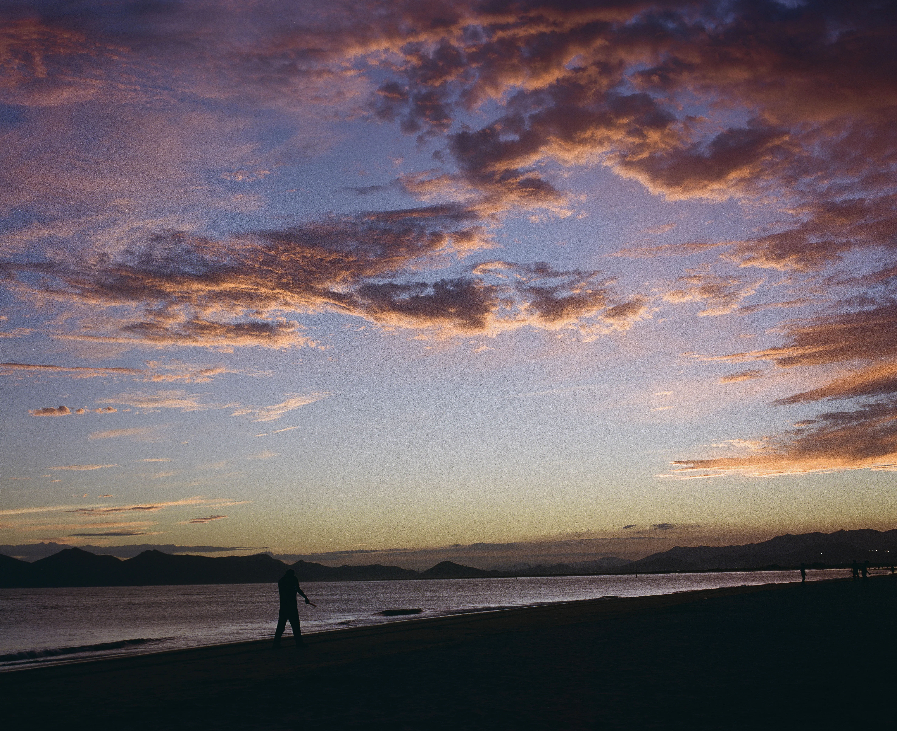
An online exhibition — Photographs, films & code
Photographer Filmmaker Developer
Foreword
빛은 지나가고, 사람은 떠난다.
그래서 나는 셔터를 누른다, 무언가 남도록.
Exhibition
01 —
Strangers who looked back. Friends who didn't notice. Every face carries a weather of its own.
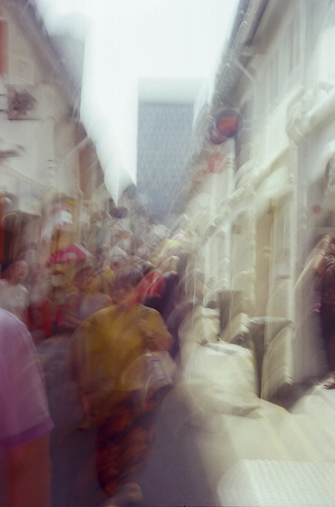
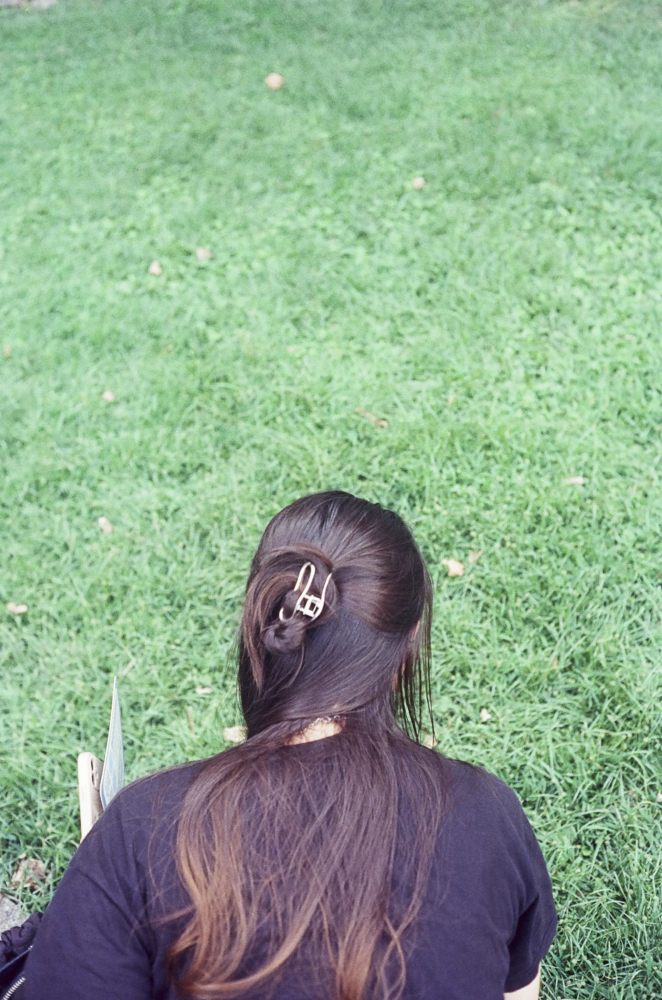
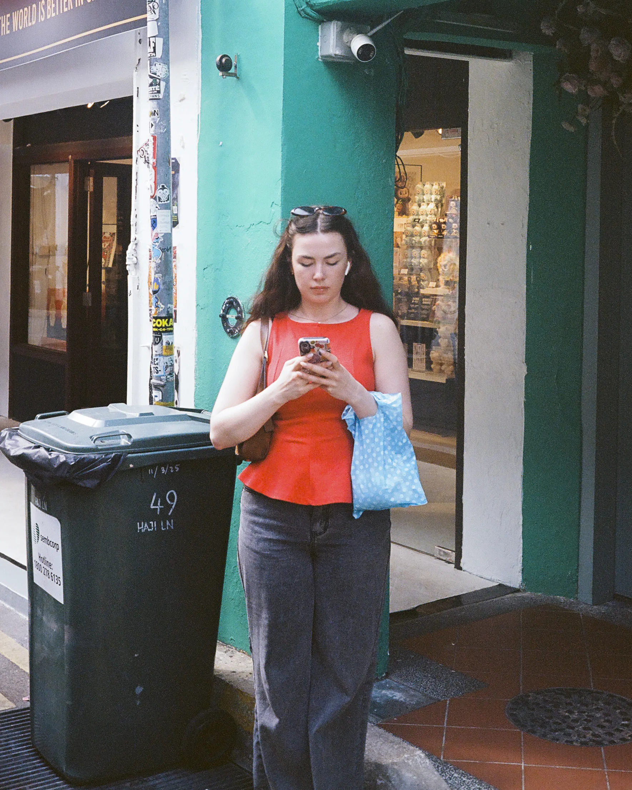
02 —
Nothing happens here — a kitchen, a bus window, 7 a.m. That is exactly why I keep them.
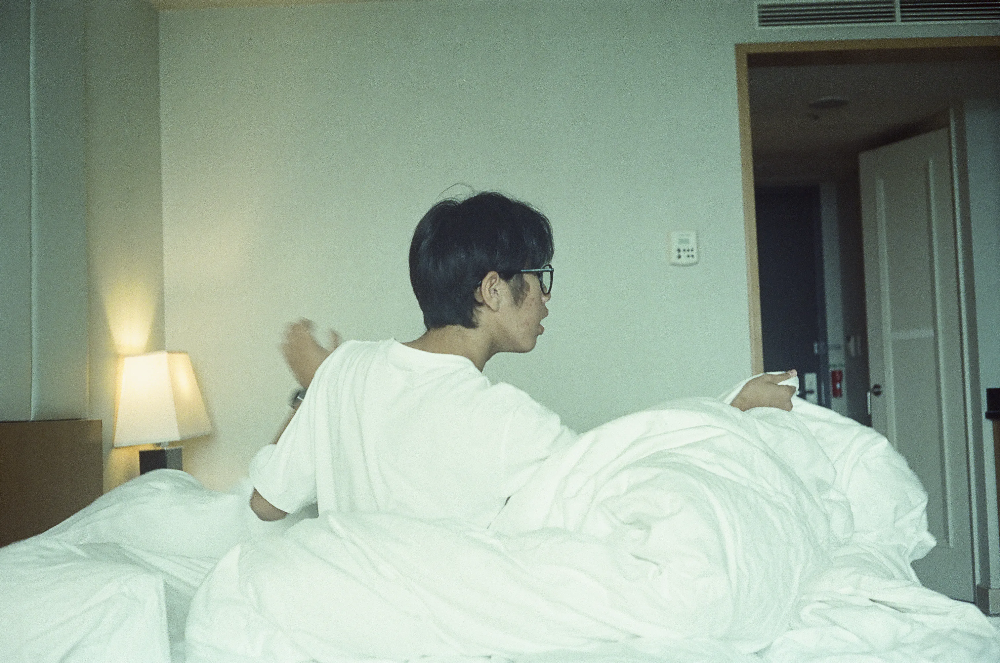
Sequence
A week of
ordinary light.
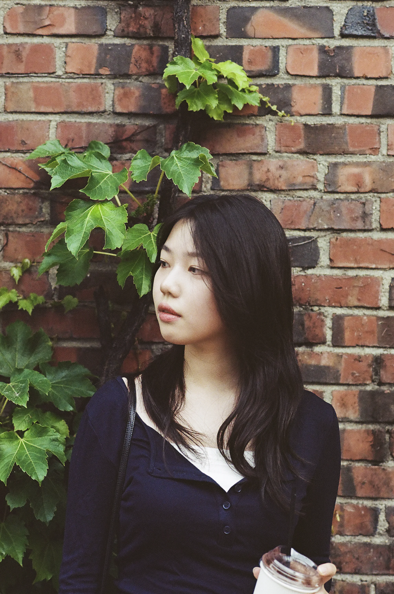

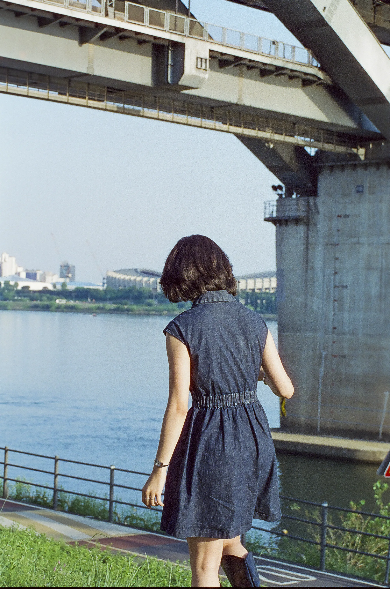

03 —
Thirty-six frames. No preview. Film taught me to wait for a moment instead of chasing it.
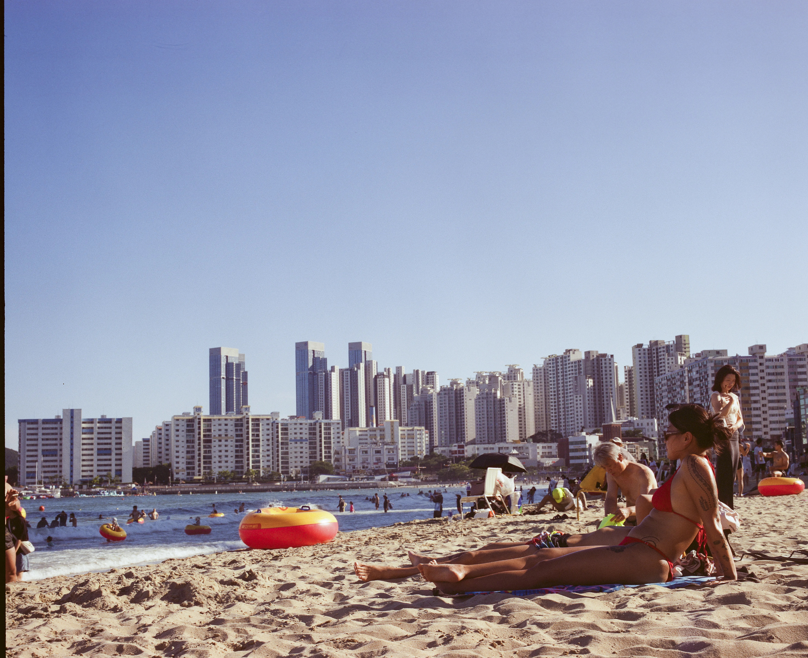
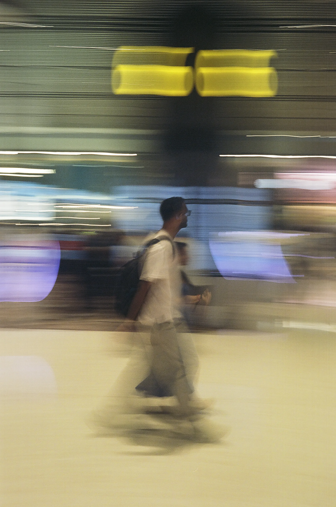
Developing film is
the slowest way to remember.
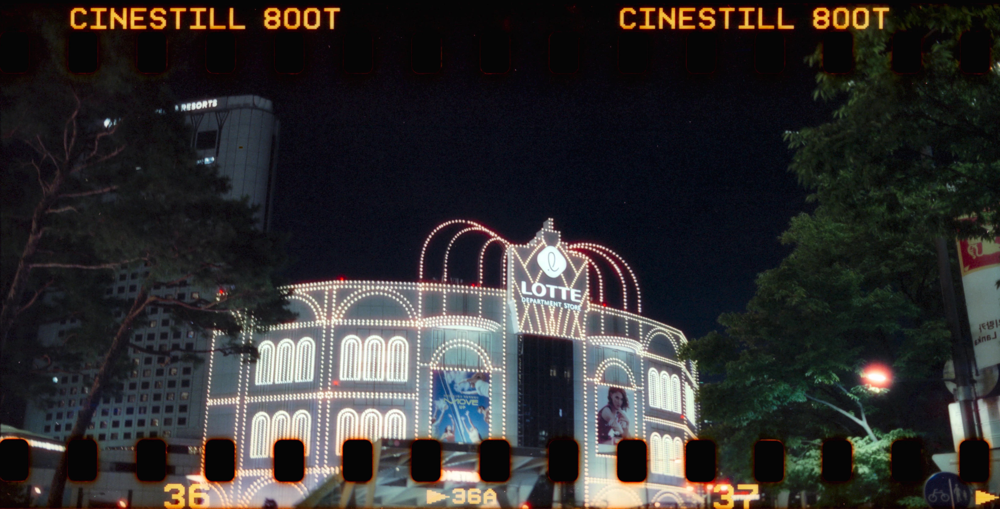
04 —
A portrait is an agreement: you let me look, and I try to see.


05 —
Double exposures, long shutters, light leaks — and the mistakes I decided to keep.
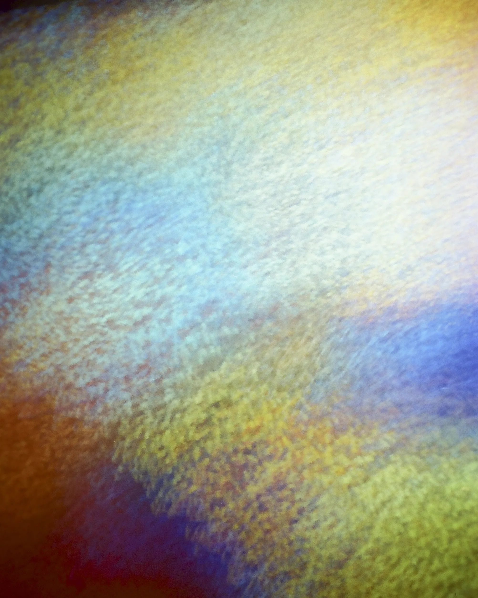
End of exhibition
Thank you for looking.
Projects
Series, films and videos — work that needs more than one picture to be told.
 Watch the film (opens in a new tab)
Watch the film (opens in a new tab)


 Watch the video (opens in a new tab)
Watch the video (opens in a new tab)


About
사진을 찍고, 영상을 만들고, 코드를 공부합니다. 도구는 달라도 하는 일은 같습니다 — 오래 바라보고, 잊고 싶지 않은 것을 남기는 일. 이 웹사이트도 그렇게 직접 만든 작은 전시장입니다.
This site is one of those rooms — designed and written by hand, line by line.